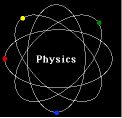
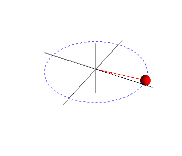
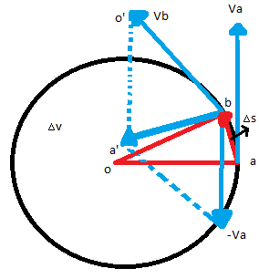

El propósito principal de esta web es ayudar a docentes y estudiantes de física ampliar sus conocimientos en la temática de movimiento circular porque que es indispensable para el proceso de aprendizaje, ya que los estudiantes deberán aplicarlo para defenderse en temas más avanzados como torque, ondas entre otros en el futuro.
Pretendemos crear una página con la mayoría de temáticas para que el estudiante consulte por sí mismo, por ahora el movimiento circular será nuestro primer avance. Tutorías y nivelaciones a domicilio u online es otra visión hacia el futuro ya que se pretende vincular trabajadores de la enseñanza de la física a la web. Fisica interactiva inicia ha ser creado desde el 2021 por una estudiante de la Universidad Distrital de la ciudad de Bogotá en Colombia con el de enseñar esta temática online debido a la situación actual del mundo que impide la presencialidad de los estudiantes a las instituciones.

OBJETIVOS
OBJETIVO GENERAL
Hacer comprensible el tema de movimiento circular, dar acceso a páginas, que favorecen el conocimiento de este tema y de la física en general para desarrollar otros conceptos adicionales y el estudiante prosiga con el tema inicial; con metodologías diferentes a las tradicionales.
OBJETIVOS ESPECÍFICOS
Describir de modo práctico y abstracto el concepto físico de movimiento circular con notación matemática.
Determinar contextos prácticos y cotidianos para invitar hacer prácticas estudiante en su propia casa, generando una buena comprensión del tema y entendimiento de la importancia de los laboratorios.
Compartir imagenes referentes a cada para para que el estudiante entienda mas rapida el tema.
Proporcionar al estudiante ayudas audiovisuales o programas específicos que colaboren con la integración del concepto de física, la noción de cantidades y magnitud.
Comparar fenómenos físicos donde involucre el movimiento rotatorio teniendo en cuenta las observaciones, consideraciones y propiedades físicas.
hacer observaciones del proceso de aprendizaje para proporcionar ayudas extras.
Impactar al estudiante causando así posible escepticismo y dudas al respecto, que después puedan ser aclaradas.
METODOLOGÍA
Se basará en dos metodologías especialmente para estudiantes de edad temprana de aprendizaje, sin embargo la página está dedicada a toda persona que inicie en el aprendizaje de la física.
La primera metodología se basa en el pensamiento, en donde se pretende enseñarles a contextualizar, analizar, relacionar, argumentar, convertir información en conocimiento y desarrollar destrezas del pensamiento más allá de la memorización que es básicamente lo que se pretende cambiar. Adicionalmente también es importante enriquecer el conocimiento desde otros métodos por esto se pretende que la metodología de la gamificación que aporta a los estudiantes ya que el juego es una herramienta que aunque no suele usarse en el aula por la idea de indisciplina, logra varios avances en el conocimiento y la versatilidad y por eso se les otorgará acceso a simuladores.
Movimiento circular
Cinematica circular
<
Introduccion
Una forma de entender el movimiento circular es considerar un cuerpo que se mueve
alrededor de un círculo de radio r.
Para describir el movimiento en una parte del cuerpo en tenemos encuenta la velocidad
lineal, la posición lineal y la aceleración lineal en el caso de que se analize la rotacion de
todo el sistema debemos tener en cuenta la posición angular, la velocidad angular y la
aceleración angular.
Movimiento circular uniforme
Se considera un cuerpo que se mueve sobre un círculo de radio r con velocidad constante
por lo que no existe aceleración.
Movimiento circular uniformemente acelerado.
Consideramos el caso anterior, sin embargo la velocidad empezará a aumentar o a disminuir por lo
tanto hay aceleración y por consiguiente los vectores de velocidad no van a ser del mismo tamaño
como en la figura anterior.
Velocidad
Vimos que el vector velocidad, en un movimiento en el espacio, está sobre la tangente a la trayectoria en el punto considerado y dirigido en el sentido del movimiento.
En este caso, el vector velocidad es
tangente a la circunferencia y perpendicular al radio que llega al punto de tangencia.
Aceleración
El vector v varía (su magnitud v no pero su dirección si), por lo tanto, el cuerpo tendrá una aceleración.
Entre las posiciones A y B cuyo desplazamiento es 'delta de s' ver la figura sabiendo que la aceleración es un cambio de velocidad con respecto al tiempo entonces.

La figura nos da una construccion del vector v los triangulos 0AB y O'A'B' son semejantes a O'A' y O'B respecto a los lados OA y OB, utilizando el teorema de tales tenemos.
Entonces la aceleración media queda
La aceleración instantánea será dada cuando Delta de t tienda a 0 entonces
Concluimos que la dirección de a será la de delta de v y según la figura cuando las posiciones sean muy cercanas, está dirigida hacia el centro del círculo; a esto se le conoce como aceleración centrípeta.
Velocidad angular
Cuando un cuerpo gira de la posición angular tetasubzero hasta la pocision angular teta, diremos que es el desplazamiento angular que es delta de teta, con ese dato definiremos la velocidad angular media, como el desplazamiento angular respecto al tiempo transcurrido.
La unidad que se observa se conoce como radianes por segundo generalmente, pero también se puede denominar vueltas por segundo (rpm) o revoluciones por minuto, siendo una vuelta igual a un ángulo de 2 pi radianes.
Posición angular
Sea un cuerpo m que se desplaza a m' que describe una parte del círculo de radio r una parte del perímetro de este conocido como arco S; entonces diremos que el ángulo teta es igual al arco entonces se tiene que